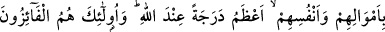

İMAN, HİCRET VE CİHAD
19. (Ey müşrikler,) siz hacılara su vermeyi ve Mescid-i Haram’ı imar etmeyi
Allah’a, âhiret gününe inanan ve Allah yolunda cihad edenle bir mi tuttunuz?
Bunlar Allah katında bir olmazlar. Allah zâlimler topluluğuna hidâyet vermez.
20. İnanan, hicret eden, Allah yolunda mallarıyla ve canlarıyla savaşanların Allah
katında dereceleri daha büyüktür. İşte kurtuluşa erenler onlardır.
21. Rableri onlara kendisinden bir rahmet, rızâ ve içinde sürekli kalacakları
nimeti bol cennetleri müjdeler.
22. Orada ebedi kalacaklardır. Şüphesiz, büyük mükafat Allah katındadır.
Rivâyete göre müşrikler “Hacılara su dağıtmak ve Mescid-i Haram’ın imar ve
bakımını yapmak, iman edip cihad etmekten daha üstündür.” diyerek bununla övünüyor,
oranın ehli ve imarcısı olmaları sebebiyle bunu gözlerinde büyütüyorlardı. Bunun
üzerine bu ayet nâzil oldu.
Kâşifî der ki: Cahiliye döneminde Harem ahalisinden bir kısmı hacılara bal ve
şarapla birlikte hurma şarabı ve kuru üzüm/kuru hurma veriyorlardı. Hz. Peygamber
zamanında su dağıtma işi Abbas’a aitti. Mescid-i Harâm’ın imâret/bakım işi de Şeybe
b. Talha’da idi.
Bir gün bu ikisi Hz. Ali’ye karşı övünmeye giriştiler. Abbas su dağıtıcılığıyla, Şeybe
de imâret vazifesi dolayısıyla övünüyordu. Hz. Ali ise İslâm ve cihadla iftihar
ediyordu. Hak sübhânehû ve teâlâ Ali’yi tasdik eden âyet gönderdi.
Bu âyetin nûzül sebebi olarak Numan b. Beşir’den rivayet edilen bir hâdise de şudur:
Numan (r.a.) diyor ki:
“Rasûlullah’ın minberinin yanında bulunuyordum. Birisi şöyle dedi: “Hacılara su
verme hayrını işledikten sonra başka bir amele gerek duymam.”
Bir diğeri “Mescid-i Haram’ı imar etme hizmetinde bulunduktan sonra başka bir
amele gerek duymam.” dedi.